Nuxt.js 2.0 Forum Description
Demo link Nuxt.js Single Page (SPA) link: https://nuxt-spa-forums.firebaseapp.com/
Demo link Nuxt.js Static Generated link: https://nuxt-static-forums.firebaseapp.com/
Video link: https://youtu.be/33WeNhsAcBk
How to run application page: https://ashot72.github.io/Nuxt2Forum/index.html
Git Repository: https://github.com/Ashot72/Nuxt2Forum
Please read How to run application first.
Nuxt.js https://nuxtjs.org/guide/ is a framework for creating Vue.js applications, and you can choose between
Universal, Static, or Single Page application.
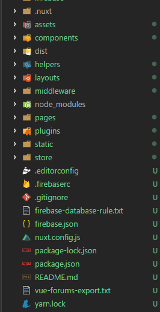
Figure 1
Here is the project structure generated.
Nuxt.js is all about configuring the project through folders and files. Folder names all are set. You can't change them
The important folder is pages folder, files in pages have to be Vue single file components and then be interpreted as routes.
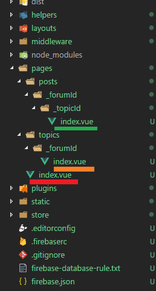
Figure 2
We have three index.vue single file components.
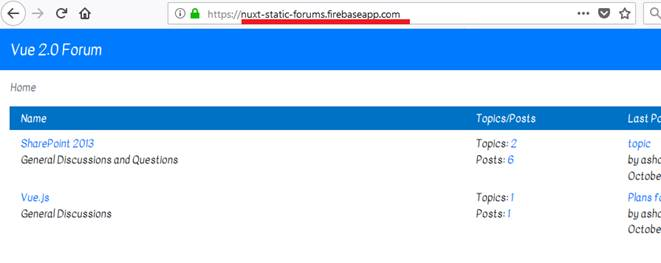
Figure 3
Index.vue underlined in red directly under pages folder matches the host slash nothing. Forums page will be rendered.
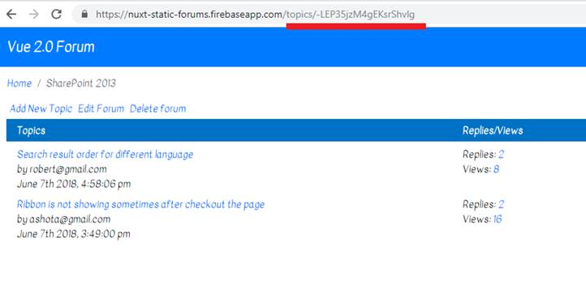
Figure 4
'topics/-LEP35jzM4gEKsrShvlg' will match 'topics/_forumId/ index.vue' underlined in orange. Topics page will be rendered.
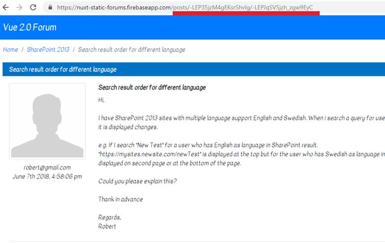
Figure 5
'posts/-LEP35jzM4gEKsrShvlg/-LEPJqSVSjzh_zgw9EyC' will match 'posts/_forumId/_topicId/index.vue' underlined in green. Posts page will be rendered.
Behind the scenes Nuxt.js uses vue-router. It sets everything up with vue-router for you.
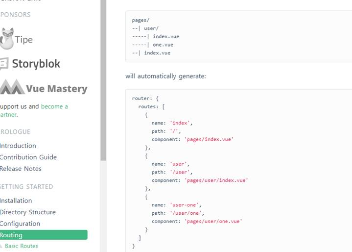
Figure 6
Navigate https://nuxtjs.org/guide/routing/ to read about routing; dynamic, nested and dynamic nested routes.
Dynamic route starts with _ (underscore). In our case both topics and posts use dynamic routes which are _forumId and _forumId/_topicId
respectively.
In Vue.js app we put code that has run once on app startup in main.js. main.js is not available in Nuxt.js. Instead it uses nuxt.config.js.
Let's compare it with the forum app I created using Vue.js.
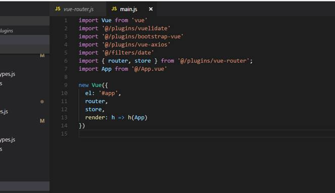
Figure 7
This is the main.js
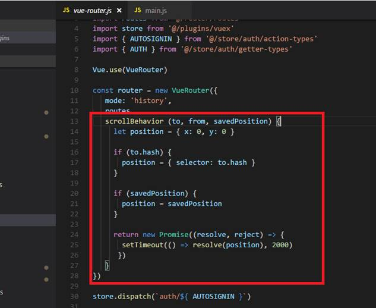
Figure 8
vue-router.js is referenced from main.js '@/plugins/vue-router' and has scrollBehavior.
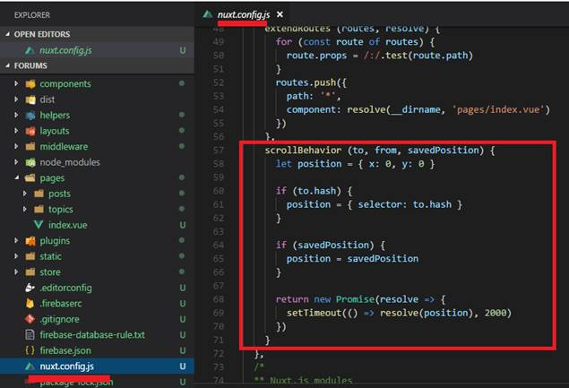
Figure 9
scrollBevaior is defined in nuxt.config.js file.
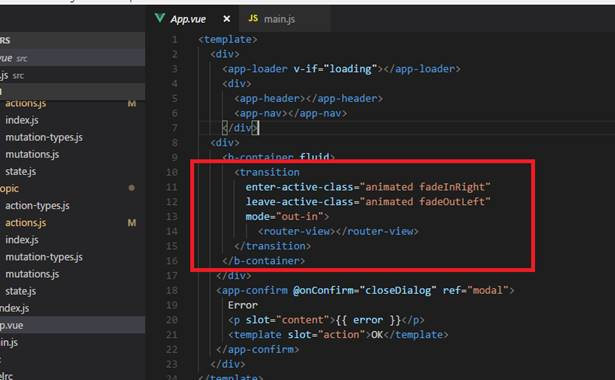
Figure 10
In Vue.js app route transition is defined in App.vue.
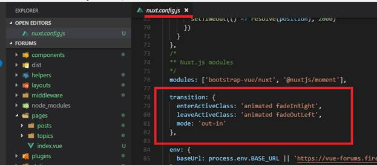
Figure 11
Our Nuxt.js forum defines route transition directly in nuxt.config.js
Vue.js forums application makes use of Vuex stores. In Nuxt.js you do not have to install Vuex dependency, it is already built in.
Nuxt.js lets you have modes of store Classic and Modules. We use Modules as every .js inside the store directory is transformed as
a name spaced module. We can optionally break down a module into separate files: state.js. actions.js, mutations.js and getters.js.
That is what we used in our Vue.js forums.
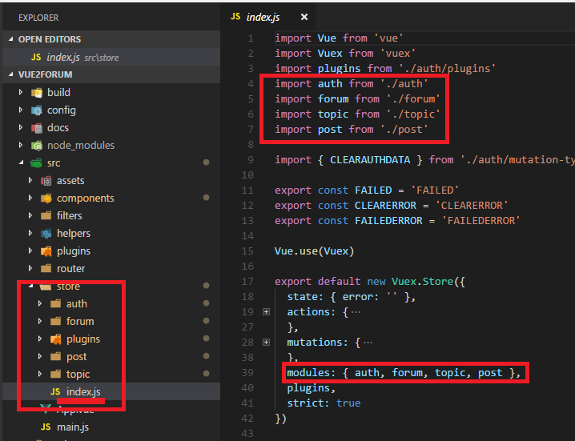
Figure 12
In Vue.js forums in store's index.js file we define modules and import them.
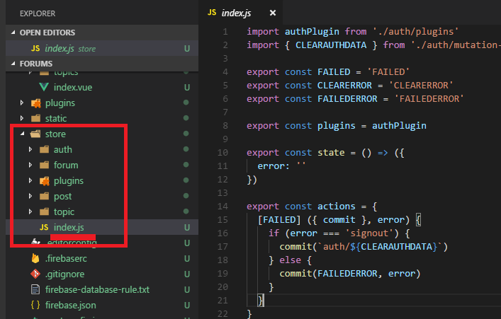
Figure 13
In Nuxt.js version we do not have modules and imports as it will be transparently obtained from the folder structure.
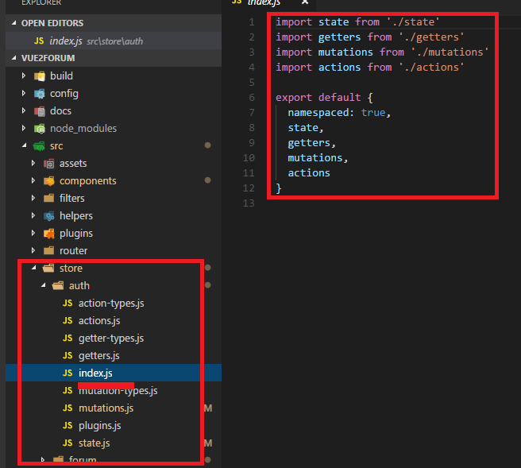
Figure 14
In Vue.js auth module defines index.js file which has a reference to state, getters, mutations and actions.
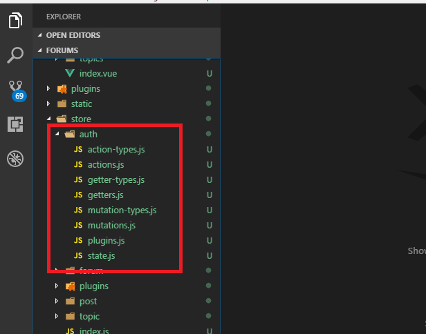
Figure 15
Nuxt.js does not have index.js file at all. No need to explicitly define imports.
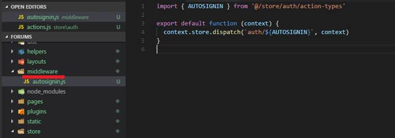
Figure 16
You may notice that there is a middleware folder in our project. Middleware is a function that is executes before a route is loaded,
before a page is loaded and you can attach middleware to all your routes. You can also give it on a per layout or per page basis.
Our middleware is trying to get logged on users, data from local storage or cookie and register it to the store.
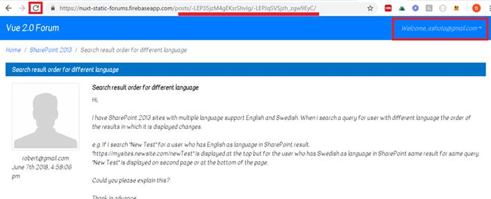
Figure 17
Suppose you are on topics page and already logged on. When you refresh the page, you should successfully see the same page with data.
This is guaranteed via middleware both on universal, spa and static pages modes. But middleware is not called in static pages case on a page refresh.
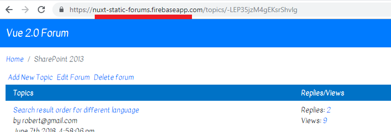
Figure 18
If I navigate this page and do page refresh the middleware will not be called which means no auto sign call is made (Figure 16).
The application will not work properly in static pages mode.
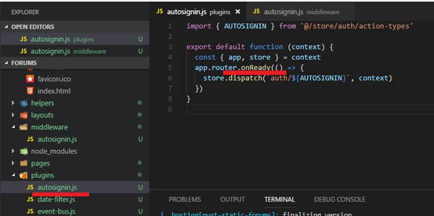
Figure 19
As a workaround I created a plugin and call auto signing on router onReady() method.
So, in universal mode only the middleware will be called. In spa mode both plugin and middleware will be called but it will not hit the database
twice as checked in the code. In static pages mode the plugin will be called only.
Sometimes we want to know if the code is running on the server or client. We can distinguish it via process.client or process.server.
I you refresh your browser and server side rendering is enabled (in universal mode) then process.server will be true. Then navigating from one page to another
this time process.client will be true as you are in spa mode.
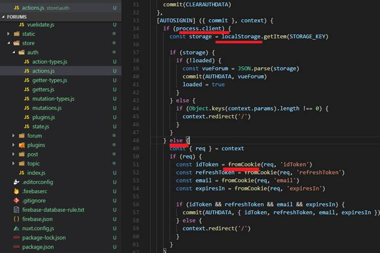
Figure 20
In our auto signing in process.client (meaning you are in spa or static pages mode or navigating from one page to another in universal mode)
we read data from local storage and pass to store as local storage is not available in server mode. If you refresh the page and server-side rendering is enabled (in universal mode)
then we read from cookie.
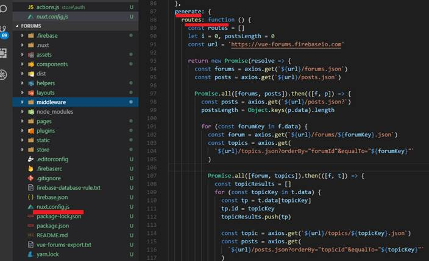
Figure 21
In nuxt.config.js with generate we configure the generation of our universal web application to a static web application.
We do it for dynamic routes because Nuxt.js cannot pre-rendered them and it simply does not know which kind of topic or post you have, which routes actually you have which _forumId, _topicId in this case you have to pre-render.
generate key holds an object where we can configure a couple of details. The important one is the routes config.
routes takes a function and it should return an array of routes that should be pre-rendered. In that route we can add all the
dynamic routes for our various dynamic elements.
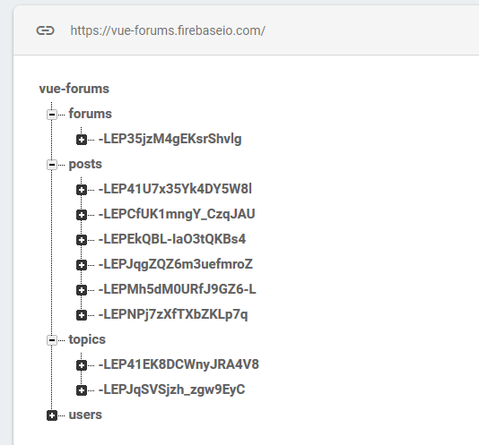
Figure 22
This is our firebase database structure.
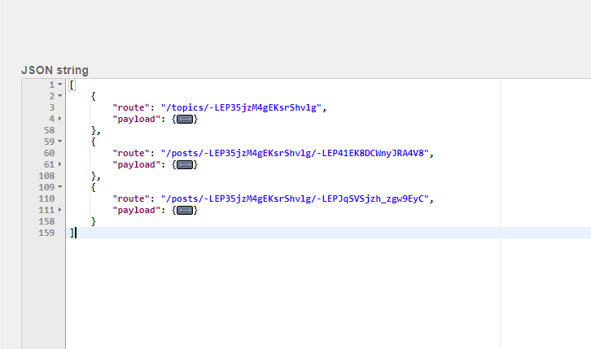
Figure 22
We did http requests when running generate command and got data from Firebase database.
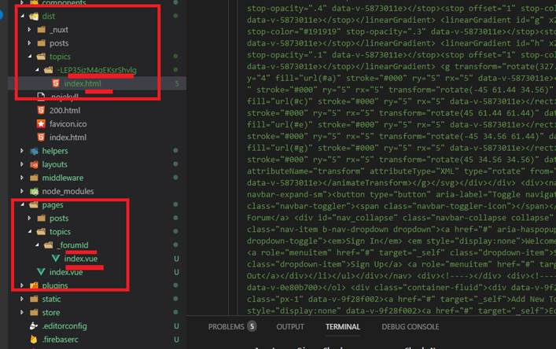
Figure 24
"route": "/topics/-LEP35jzM4gEKsrShvlg" was included in the rendering process. It tries to find a matching page setup up
where the route would fit it (pages/topics/_forumId) and it does as we have a topic folder and in that folder we have
a dynamic element _forumId. if we inspect the dist folder under topics we see a new subfolder with that forumId (-LEP35jzM4gEKsrShvlg)
and index.html file that actually includes completely prerendered topics.
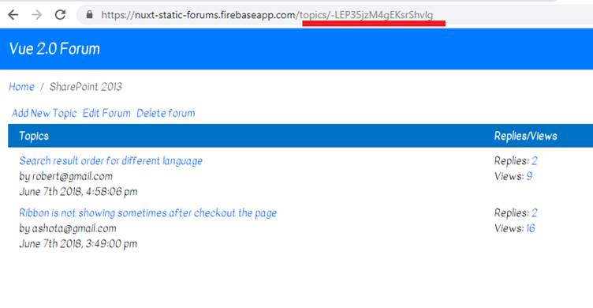
Figure 25
Pre-rendered topics.
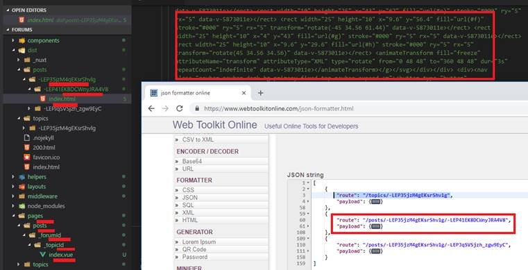
Figure 26
The same applies to posts.
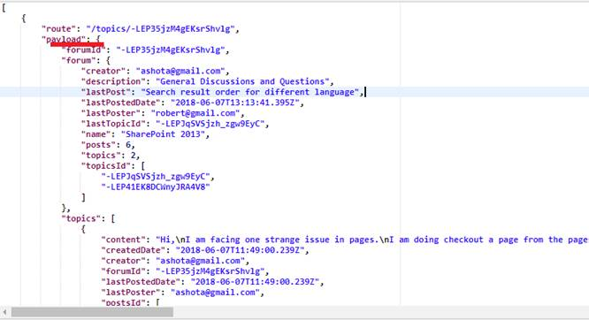
Figure 27
The second property of the object is payload which can contain data that we want to pass to the generated route.
Now, we do not just generate the path but all the necessary data in a payload property.
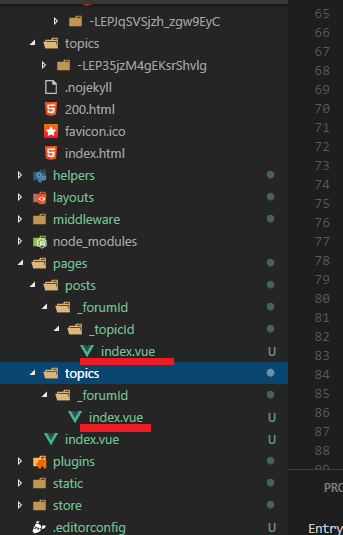
Figure 28
We can use generated payload in index.vue files.
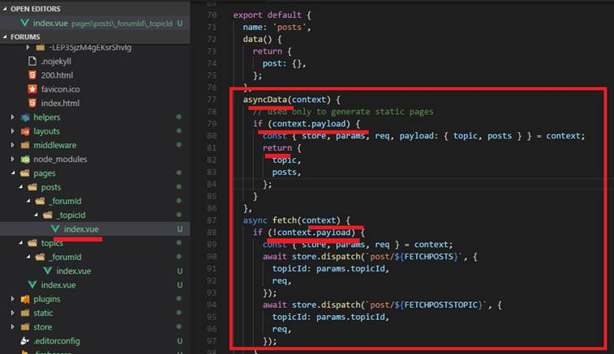
Figure 29
Sometimes you just want to fetch data and pre-render it on the server without using a store. asyncData is called every time before loading
the component (only for pages components). asyncData is pretty much the same as normal data of the component and it has to return an object
which will be the data of this component and has the data you can use in the template.
We check if the context has payload property (context.payload in asyncData) which it only has during the static generation command. If that is the case
then we want to return different data to be merged with our data for this component. We will not make a new HTTP request. instead we return
a JavaScript object where our data is the context payload data.
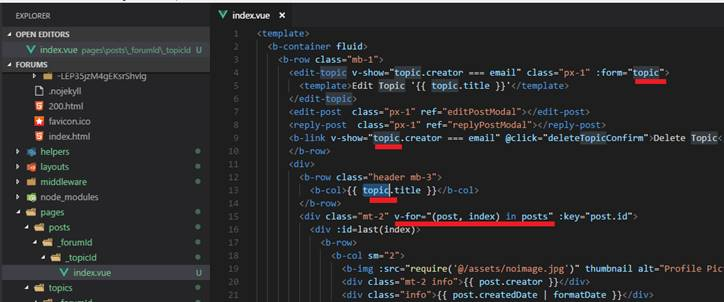
Figure 30
So, during static generation we pass data (in our case it is topic and posts) from payload and render the template in asyncData method.
We do not go through our store we just directly render the page.
As opposed to asyncData method the fetch method is used to fill the store before rendering the page. It is like the asynData method
except it does not set the component data. Our application uses fetch as we make use of Vuex store. For example
we dispatch an action to fetch posts and render it after state changes. So asyncData is only used for static page generation in our application
otherwise fetch method. If context.payload is true we execute asyncData but do not execute fetch as context.payload should be false to execute
!context.payload. This way we do not make unnecessary and redundant request in fetch as we already have payload data and render it in asynData method.
If we do not generate a static pages and in a normal application flow then context.payload is always false, meaning we never execute asyncData
method and always execute fetch to receive data via HTTP requests.
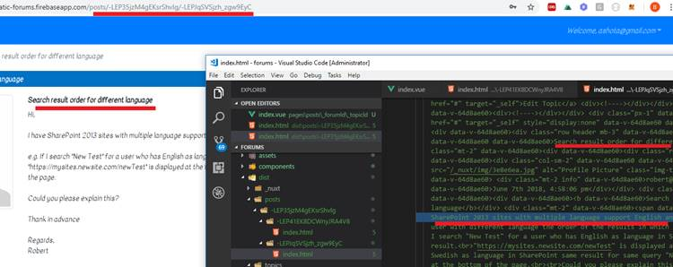
Figure 31
Static page generation will not work via fetch and store. AsyncData direct rendering is required to render the template.
You see the actual data rendered from firebase database via static page generation and asyncData method.
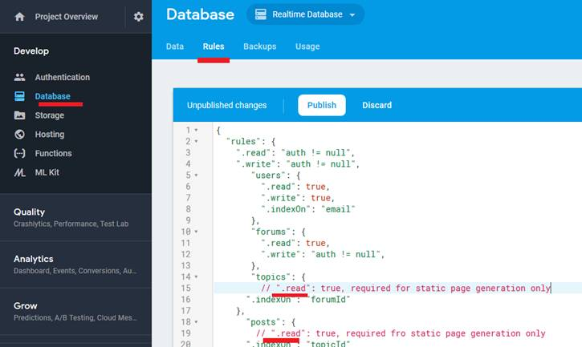
Figure 32
Note, that we need read access to topics and posts during static pages generation only but not in the application.